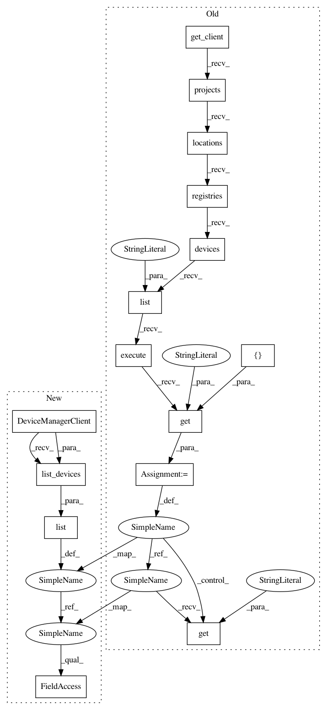

223abdede96295f7fba58a1d1e1fb63a961c33f5,iot/api-client/manager/manager.py,,create_gateway,#Any#Any#Any#Any#Any#Any#Any#Any#,573
Before Change
// [START iot_create_gateway]
// Check that the gateway doesn"t already exist
exists = False
client = get_client(service_account_json)
registry_path = "projects/{}/locations/{}/registries/{}".format(
project_id, cloud_region, registry_id)
devices = client.projects().locations().registries().devices(
).list(
parent=registry_path, fieldMask="config,gatewayConfig"
).execute().get("devices", [])
for device in devices:
if device.get("id") == gateway_id:
exists = True
print("Device: {} : {} : {} : {}".format(
device.get("id"),
After Change
// [START iot_create_gateway]
// Check that the gateway doesn"t already exist
exists = False
client = iot_v1.DeviceManagerClient()
parent = client.registry_path(project_id, cloud_region, registry_id)
devices = list(client.list_devices(parent=parent))
for device in devices:
if device.id == gateway_id:
exists = True
print("Device: {} : {} : {} : {}".format(
device.get("id"),
In pattern: SUPERPATTERN
Frequency: 3
Non-data size: 15
Instances
Project Name: GoogleCloudPlatform/python-docs-samples
Commit Name: 223abdede96295f7fba58a1d1e1fb63a961c33f5
Time: 2019-10-09
Author: gguuss@gmail.com
File Name: iot/api-client/manager/manager.py
Class Name:
Method Name: create_gateway
Project Name: GoogleCloudPlatform/python-docs-samples
Commit Name: 223abdede96295f7fba58a1d1e1fb63a961c33f5
Time: 2019-10-09
Author: gguuss@gmail.com
File Name: iot/api-client/manager/manager.py
Class Name:
Method Name: list_gateways
Project Name: GoogleCloudPlatform/python-docs-samples
Commit Name: 223abdede96295f7fba58a1d1e1fb63a961c33f5
Time: 2019-10-09
Author: gguuss@gmail.com
File Name: iot/api-client/manager/manager.py
Class Name:
Method Name: create_device